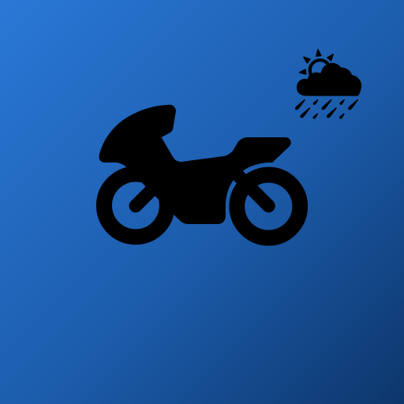

Vérifié le 31 juillet 2026 · ← Retour à l'application
La carte que tu vois dans Levante est faite du travail d'autres personnes, presque entièrement bénévole et presque entièrement gratuit. Cette page existe parce que la licence de ces données oblige à dire à qui elles appartiennent — et parce qu'il est juste de le dire.
OpenStreetMap — les données de la carte : les routes, les rivières, les villes, les noms des rues, et aussi les radars fixes que l'application affiche. Cartographie d'OpenStreetMap, maintenue par des bénévoles et disponible sous Open Database License (ODbL).
OpenMapTiles — le schéma qui transforme les données d'OpenStreetMap en tuiles vectorielles dessinables. openmaptiles.org.
OpenFreeMap — le service qui sert ces tuiles, sans compte, sans clé et sans limite de requêtes. openfreemap.org. C'est le seul fournisseur dont la carte dépend pour exister.
MapLibre GL — le moteur qui dessine la carte sur ton écran, sous licence BSD à trois clauses. Il vient avec nous, depuis notre propre origine : il n'est demandé à aucun serveur tiers quand tu ouvres l'application.
Natural Earth et Noto Sans — le style de base de la carte et les polices qu'elle utilise ; les polices viennent elles aussi de chez nous, en une seule famille, pour que la carte enregistrée prenne moins de place sur ton téléphone.
OSRM — la réserve du calcul d'itinéraires : il n'est contacté que si la clé Geoapify manque. project-osrm.org, sur des données OpenStreetMap.
Geoapify — le calcul d'itinéraires, la recherche de lieux et le géocodage (transformer un nom en coordonnée, et l'inverse). geoapify.com. Les résultats portent avec eux l'attribution de leur source, et cette attribution est enregistrée avec le lieu que tu enregistres.
Photon et Nominatim — les réserves de la recherche, quand la principale ne répond pas. Toutes deux sur des données OpenStreetMap.
Overpass — la requête qui amène les radars fixes d'OpenStreetMap sur ton trajet.
Open-Meteo — toutes les prévisions : pluie, vent, rafales, température, orage, et l'historique qui décide si la première pluie va faire remonter l'huile de la route. open-meteo.com, sous licence CC BY 4.0. La prévision est, et restera, gratuite dans Levante.
En ouvrant la carte, les crédits apparaissent dans le coin inférieur gauche. Ils disparaissent au bout d'environ cinq secondes, ou dès que tu touches la carte — au premier des deux —, parce que sur un écran de conduite chaque ligne de texte dispute la place à la route. Le ⓘ reste dans le même coin, et c'est lui qui t'a amené ici.
C'est ce que les orientations d'attribution de l'OpenStreetMap Foundation permettent pour les cartes interactives, et pas davantage : les crédits peuvent s'estomper, mais ils doivent rester à une interaction de distance. Si tu trouves un jour la carte sans le ⓘ et sans les crédits, c'est un défaut de notre part — et nous voulons le savoir.
Pour nous le dire : info@getlevante.com.
Lucide — les icônes de la barre du bas, de la loupe de la recherche, du GPS et des réglages. Elles sont dix, dessinées au trait sur une grille de 24×24, et elles vivent dans l'application : elles ne sont téléchargées de nulle part, pour qu'elles fonctionnent sur la route sans réseau.
Distribuées sous licence ISC, qui permet l'usage commercial et n'exige pas d'attribution visible à l'écran. Cette page remplit la seule obligation que la licence impose — garder son texte auprès de ce qui est distribué.
ISC License Copyright (c) 2026 Lucide Icons and Contributors Permission to use, copy, modify, and/or distribute this software for any purpose with or without fee is hereby granted, provided that the above copyright notice and this permission notice appear in all copies. THE SOFTWARE IS PROVIDED "AS IS" AND THE AUTHOR DISCLAIMS ALL WARRANTIES WITH REGARD TO THIS SOFTWARE INCLUDING ALL IMPLIED WARRANTIES OF MERCHANTABILITY AND FITNESS. IN NO EVENT SHALL THE AUTHOR BE LIABLE FOR ANY SPECIAL, DIRECT, INDIRECT, OR CONSEQUENTIAL DAMAGES OR ANY DAMAGES WHATSOEVER RESULTING FROM LOSS OF USE, DATA OR PROFITS, WHETHER IN AN ACTION OF CONTRACT, NEGLIGENCE OR OTHER TORTIOUS ACTION, ARISING OUT OF OR IN CONNECTION WITH THE USE OR PERFORMANCE OF THIS SOFTWARE.
lucide.dev — version 1.31.0.